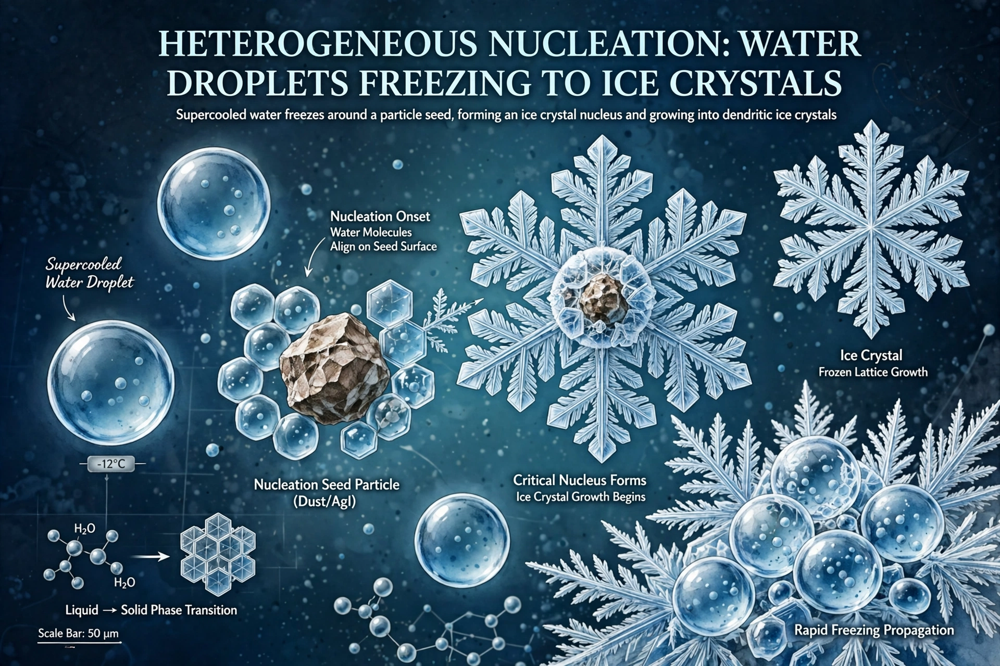

Nucleation is the first step in the formation of a new thermodynamic phase or structure via self-assembly or self-organisation in a substance. Examples include formation of crystals from solution, bubbles in boiling or carbonated liquids, and cloud droplets condensing on particles.

Classical nucleation theory balances bulk free-energy gain against surface-energy cost, yielding a critical nucleus size and an energy barrier. Homogeneous nucleation occurs spontaneously in a uniform phase and is rare; heterogeneous nucleation on impurities, surfaces or seed crystals is far more common and faster.
Nucleation controls crystallisation in industry and pharmaceuticals, metallurgy grain structure, weather and cloud seeding, and protein aggregation relevant to disease. Supercooling and superheating are metastable states persisting for lack of nucleation sites. See Obsidian as a glass formed avoiding crystallisation, Oceanic climate for clouds.